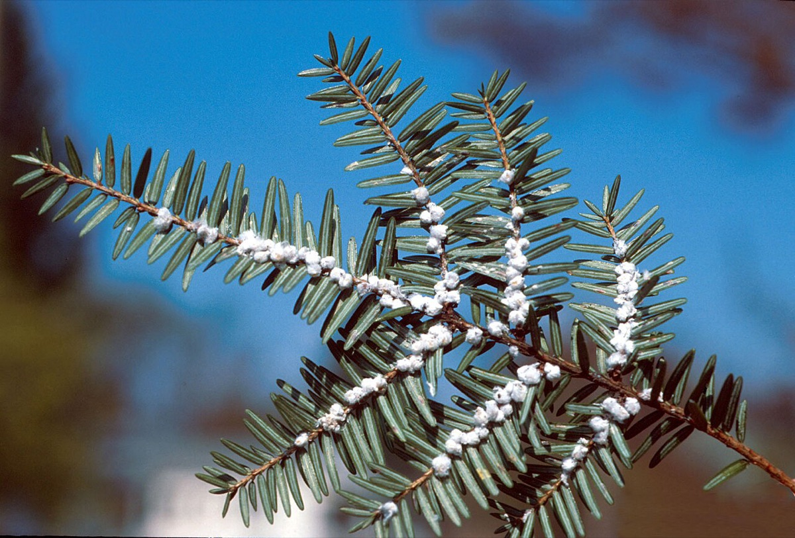

Hemlock Woolly Adelgid
Adelges tsugae
A small sap-feeding insect that kills hemlock. Eastern hemlock is a common softwood in Vermont forests and matters as deer winter cover.
- Also called
- HWA
- Kind
- insect · Adelgidae
- Legal status
- A Vermont hemlock woolly adelgid quarantine regulates the movement of hemlock plants and wood products (VTinvasives page; details not given there). Not on the Agency of Agriculture plant quarantine list (plants only). (checked 2026-10-30)
- Look-alikes
- Spider egg sacs; Spittlebug (seen on pine); Hemlock needleminer
Pictures

Names
Hemlock woolly adelgid (HWA), Adelges tsugae. Hosts: eastern hemlock and Carolina hemlock; a winged form searches for a spruce to start a sexual cycle.
Range
First found in Vermont in 2007. The species page says "confirmed in southern Vermont" and links a map; the 2019 FPR document says it is established in most Vermont towns in USDA Plant Hardiness Zone 5b and that spread into colder zones has been limited, and that some winter temperatures have killed many overwintering adelgids. Check the current map; the status near your land is not recorded here.
How to identify (by season; look-alikes and the key difference)
- White, cottony balls (ovisacs) at the base of hemlock needles. The wool is attached to the twig, not the needles; it is waxy, not silky or stretchy, and looks wispy like a cotton ball rather than painted on like pine sap.
- Tree symptoms: yellowing and falling needles, branch dieback and a thinning crown.
- Light infestations are hard to see: they may be concentrated at the tops of a few trees or on scattered branches.
- Look-alikes: spider egg sacs, spittlebug, and hemlock needleminer.
- Months when ovisacs are most visible are not stated in the sources read.
Through the year
Dates are typical for Vermont and shift with elevation and year; "approximate" means the source gave a season and the dates are a translation of it.
| When | What | Look for | What to do | Dates |
|---|---|---|---|---|
| All year | survey (avoid) | Do not move infested or possibly infested hemlock material; a quarantine restricts moving live hemlock from infested counties. Check hemlocks you buy for planting. | - | stated |
| Apr 1 to Aug 31 | survey (control) | Adelgids are most likely to be spread from April to the end of August. | Take down or empty bird feeders and bird baths, or move them at least 100 feet from hemlocks (birds carry adelgids); limit activity in infested areas and brush off and wash clothing, vehicles and equipment after working there. | stated |
| Aug 1 to Feb 28 | survey (control) | The months when cutting or pruning infested branches is least likely to spread the adelgid (FPR, 2019). | For yard trees, knock the white ovisacs off with a strong stream of water or prune infested branches in this window; leave debris on site. | stated |
Habitat and spread
Two generations a year on eastern hemlock (a spring generation, some of it winged, and a winter generation), through six stages. Birds likely first brought it to southern Vermont. Spread is most likely April through August.
Damage
It feeds on young twigs so needles dry out and drop early; trees may die in four to six years, and survivors may have sparse foliage that gives less wildlife shelter and less shade over streams. Infested hemlocks in New England survive for long periods, and the FPR document says that climate change is expected to increase the impact in the future. Hemlock that is also infested with elongate hemlock scale (known in southeastern Windham County) may decline faster.
What helps it spread (not something to encourage)
This is an invasive species, so nothing here is advice to encourage it. What the sources read say about where it grows and how it spreads is in the sections above; what they say about stopping it is under Control. The Vermont Landowner's Guide, chapter 17 (corrective strategies for invasive species), covers general methods for invasive plants and pests.
Control (by method, timing, follow-up, what not to do)
- Where it is not found: no need to change forest management in anticipation (FPR). Where it is present, the state's management guide for eastern hemlock describes an integrated approach (not read).
- Healthy hemlocks on deeper, moister soils survive better: maintain the hemlock component on such sites, release young hemlocks and avoid significant disturbance.
- Yard trees: keep them vigorous (water in drought, mulch, avoid mower and trimmer damage); do not fertilize infested trees, because excess nitrogen encourages adelgids. Knock ovisacs off with a strong stream of water or prune infested branches (August to February).
- Debris: leave it on site where possible. Chipping does not eliminate adelgids. Infested debris can be moved after drenching with soapy water (1/4 cup liquid soap per gallon) or covering with a clear tarp for three weeks when daytime temperatures are above 50 F. Burning needs a burn permit from the Town Fire Warden.
- Insecticide (high-value trees): horticultural oil or insecticidal soap sprays (best April to May and August to mid-October) and systemic treatments (trunk injection, basal bark spray, soil) by certified applicators; they do not give long-term protection and must be repeated.
- Biological control is being used across the landscape: the beetle Laricobius nigrinus and the fungus Lecanicillium muscarium have been used in Vermont.
- Report a suspected infestation through the VTinvasives reporting page or your district FPR office.
Legal status
A Vermont quarantine restricts the movement of live hemlock trees from infested counties and regulates the movement of hemlock plants and wood products. The effective date and specific requirements were not given on the pages read; ask the county forester before moving hemlock material.
Sources
- Vermont Invasives, Hemlock Woolly Adelgid: https://vtinvasives.org/invasive/hemlock-woolly-adelgid (read 2026-10-30, no update date shown)
- Vermont Department of Forests, Parks and Recreation, Hemlock Woolly Adelgid in Vermont: Recommendations for Landowner Response, August 2019: https://fpr.vermont.gov/sites/fpr/files/Forest_and_Forestry/Forest_Health/Library/VTFPR_HWAinVT_RecommendationsforLandownerResponse.pdf (read 2026-10-30)
- Not read: Management Guide for Eastern Hemlock Conservation in Vermont (FPR, June 2023); the Vermont Invasives reporting page
What this page is based on
Kind of source: primary-agency (VTinvasives species page and the FPR landowner-response PDF of August 2019, both read)
What was read: The VTinvasives species page for hemlock woolly adelgid (summarizing fetch, 2026-10-30) and the Department of Forests, Parks and Recreation PDF 'Hemlock Woolly Adelgid in Vermont: Recommendations for Landowner Response' (August 2019, read as text, 4 pages). Neither gives dates for when the white ovisacs are visible or when to survey, so the note has no 'identify' window; the species page gives no county list (it says 'confirmed in southern Vermont' and links a map) and no update date. Spread beyond 2019 and the status of the quarantine rule were not checked.
Last checked: 2026-10-30
Vermont land and forest reference, built 2026-11-05. Rules and dates here are summaries, not legal advice; dates shift with elevation and year. Photo and recording credits · Note: _reference/US-VT/Invasives/Hemlock Woolly Adelgid.md